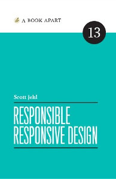

Lean for GreenIT
How we have used Lean during conception phase
to reduce the ecological footprint of our website
Bruno Thomas - @bam_thomas - classe.io
"If you aggregated the electricity use by data centers and the networks that connect to our devices, it would rank sixth among all countries"
Gary Cook Greenpeace's international IT analyst
Plan
- Project context
- Situation
- Problem: website green efficiency
- Kaizen: webmail integration
- Results & Conclusion
A meeting
with
-
Two lawyers and a developer
Cabinet Ricard & Ringuier cannot find a case software that fit their need, asks if we could build one...
-
Green IT and Lean
...with Corporate Social Responsibility (CSR)
What does the litterature say ?
About CSR in software development-
Scott Jehl
A book for developers. A great part is about responsible design, but also :- how to make a website durable and available for all kinds of devices
- how to optimize resources
-
Frédéric Bordage
 It's 115 good practices proposed by the author to optimize a website (in french). Each one has a level of priority, high/medium/low leading to an evaluation grid based on the number of high/medium/low advices implemented.
It's 115 good practices proposed by the author to optimize a website (in french). Each one has a level of priority, high/medium/low leading to an evaluation grid based on the number of high/medium/low advices implemented.
Problem solving
Which problem to tackle first ?
What will be the benefit for the user ?
How to measure carbon footprint improvements ?
2. Situation

Ecoindex model


let's go and see
how the layout is built
<div class="ui inverted vertical footer segment">
<div class="ui center aligned container">
<img src="images/logo.png" class="ui centered mini image">
<div class="ui horizontal inverted small divided list">
<a class="item" href="#">Mentions légales et C.G.U.</a>
<a class="item" href="#">Respect de votre vie privée</a>
<a class="item" href="#">Contactez-nous</a>
<div class="item">version: {{ version }}</div>
</div>
</div>
</div>
Problem: Website green efficiency (footer)
The lawyers asked to remove the footer. This represents 558 Bytes and 8 DOM elements for each page

<!DOCTYPE html>
<html><head>
<meta http-equiv="content-type" content="text/html; charset=UTF-8">
....
<title>Projet S</title>
<link rel="stylesheet" href="/static/css/semantic.css"/>
<link rel="stylesheet" href="/static/css/mytheme.css"/>
<script src="/static/js/jquery.min.js"/>
<script src="/static/js/jquery.form-3.51.js"/>
<script src="/static/js/underscore.min.js"/>
<script src="/static/js/backbone.min.js"/>
<script src="/static/js/semantic.min.js"/>
<script>
$(document).ready(function() {
$('.masthead').visibility({
once: false,
onBottomPassed: function() {
$('.fixed.menu').transition('fade in');
},
onBottomPassedReverse: function() {
$('.fixed.menu').transition('fade out');
}
});
$('.ui.sidebar').sidebar('attach events', '.toc.item');
});
</script>
</head>
<body>
<div class="ui main container>
{% block body %}{% endblock %}
</div>
</body>
Problem: Website green efficiency (header)
-
2 stylesheets CSS not minified
-
5 javascript libraries. Each is a request
-
Inline javascript loaded each page (not cached) and not minified
back to the situation (polling)


Polling...
"...is like sending elevator to each floor all the time to see if someone is there"
Kaizen: webmail integration
Polling alternatives
-
Long time polling
HTTP protocol workaround for webpush. Works with all browsers. Regular request and response header overhead (~1KB).
-
Comet
Rather old, based on long time polling
-
Http Streaming
Similar to long polling but the server responds with a header "Transfer Encoding: chunked" and hence we do not need to initiate a new request every time the server sends some data
-
Server-Sent Events
Based on long time polling
-
Networking plugins
Users need to install a software component in their browsers
-
Websocket
Full-duplex communication over a TCP connection. Implemented in all recents browsers (mobile included). Just TCP keep-alive (132 Bytes) sent over the network every 45s.
-
HTTP/2
Latest HTTP specification (2015) allowing server push and pipelining. Very effective but not well supported by browsers yet
Kaizen: webmail integration
Polling alternatives
HTTP protocol has not been built for server push
-
Long time polling
HTTP protocol workaround for webpush. Works with all browsers. Regular request and response header overhead (~1KB).
-
Comet
Rather old, based on long time polling
-
Http Streaming
Similar to long polling but the server responds with a header "Transfer Encoding: chunked" and hence we do not need to initiate a new request every time the server sends some data
-
Server-Sent Events
Based on long time polling
-
Networking plugins
Users need to install a software component in their browsers
-
Websocket
Full-duplex communication over a TCP connection. Implemented in all recents browsers (mobile included). Just TCP keep-alive (132 Bytes) sent over the network every 45s.
-
HTTP/2
Latest HTTP specification (2015) allowing server push and pipelining. Very effective but not well supported by browsers yet
Kaizen: webmail integration
Polling alternatives
Main differences (from this SO thread and caniuse.com). First is best.
-
Latency & Bandwidth efficiency
- WebSockets & HTTP/2
- HTTP streaming
- HTTP long-polling
- HTTP polling
-
Browser support
- HTTP polling & streaming: all
- WebSocket: iOS 4.2. Android 4.4. IE 10 and Edge. Firefox, Chrome and Opera since a long time
- HTTP/2: iOS 9.2, Android 4.4.4, not IE mobile, Safari partial, Chrome > 41
-
Implementing cost estimate
- HTTP polling
- WebSockets
- HTTP long polling, streaming
- HTTP/2
-
Binary data support (typed arrays, blobs)
- WebSockets: yes
- HTTP/2: yes
- HTTP polling, streaming: ajax binary is recent
Check
How we've been good !


Conclusion
- It is more than dev concern : business model, business cases
Conclusion
- It is more than dev concern : business model, business cases
- Eco-logic = Eco-nomic in software ? Software craftmanship
Conclusion
- It is more than dev concern : business model, business cases
- Eco-logic = Eco-nomic in software ? Software craftmanship
- Storytelling : being able to talk about the product and vision
Conclusion
- It is more than dev concern : business model, business cases
- Storytelling : being able to talk about the product and vision
- Eco-logic = Eco-nomic in software ? Software craftmanship
- CSR - UX - Efficiency convergence
Conclusion
- It is more than dev concern : business model, business cases
- Storytelling : being able to talk about the product and vision
- Eco-logic = Eco-nomic in software ? Software craftmanship
- CSR - UX - Efficiency convergence
- Lean
- is eco-nomic : means saving, maximizing results (congruent).
- allows to go beyond borders

Thanks !
- Régis Médina
- Antoine Ricard
- Bruno Ringuier
- Florence Préault
- Philippe Blayo
- You !
References
- Ecoindex : http://ecoindex.fr
- Another environment impact tool (english) : http://webenergyarchive.com/
- Article of CNRS about compiled/interpreted languages efficiency (french)
- Marketing product storytelling : "Using story telling strengthen brand" and "Jimmy Webb and the Power of Storytelling for B2B Companies"